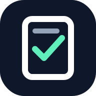

ExamScan
Official examination attendance workspace
Download the Android testing app
Scan student admission slips quickly with the native Google Code Scanner. Attendance is recorded only after the AZM.AIO backend confirms the student and the currently open Hall session.
↓ Download Android APK (27.6 MB)Testing build: This APK is debug-signed, not a production release. It has passed automated tests but has not been verified on a physical Android device. Use only for authorized staff testing; do not use to mark live examination attendance until approved.
SHA-256: 5c74ecf1dbfb8f41cbac790fa6130863ad9b1f8b37ceca015cc980a5b697cc13
Download directly from this official HTTPS site. Android may ask you to explicitly allow installation from your browser; do not disable Play Protect. This app requires Google Play Services and a staff account.
Prefer the installable web version?
No APK is required. Open ExamScan in Chrome or another compatible browser. The browser scanner is separate from the Android app's native Google Code Scanner.
Open ExamScan web app